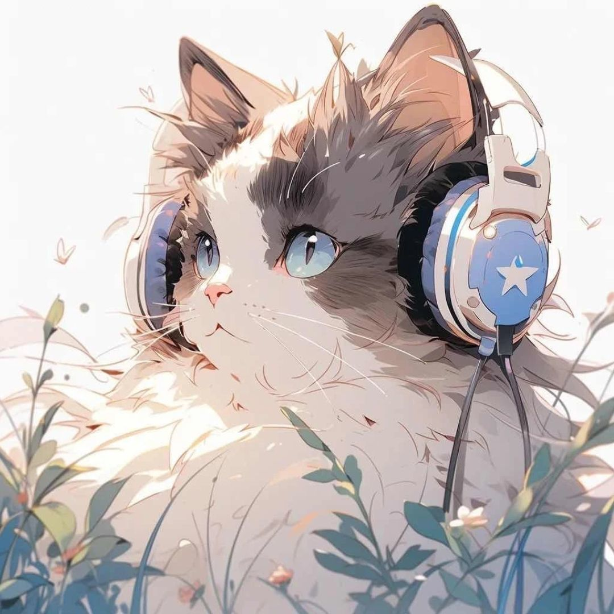

「小电视の日常」是一个记录技术、生活与思考的个人博客。这里既有毛玻璃特效的代码笔记，也有日常随想。希望你能在这里找到有趣的内容。
一个热爱折腾的代码爱好者，喜欢研究各种新技术，尤其钟情于 Cloudflare 生态和前端毛玻璃设计。不精通任何代码，但好在有 DeepSeek 这样的 AI 助手帮忙，让想法变成现实。

Sibyl
一个无聊但喜欢代码的家伙
❤️ 感谢 DeepSeek 全程技术指导 ❤️
❤️ 感谢每一位代码贡献者 ❤️
❤️ 感谢每一位来访的朋友 ❤️